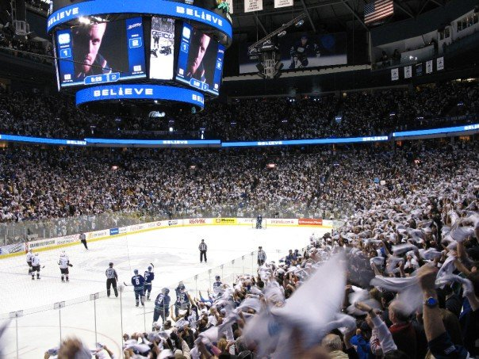
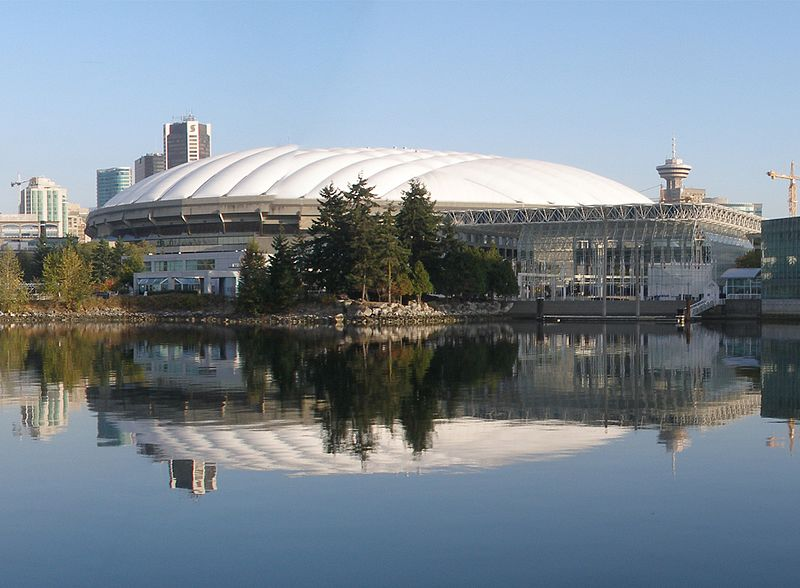

Other Links
The mild climate of the city and proximity to ocean, mountains, rivers and lakes make the area a popular destination for outdoor recreation. Vancouver has over 1,298 ha (3,210 acres) of parks, of which Stanley Park, at 404 ha (1,000 acres), is the largest.[238] The city has several large beaches, many adjacent to one another, extending from the shoreline of Stanley Park around False Creek to the south side of English Bay, from Kitsilano to the University Endowment Lands, (which also has beaches that are not part of the city proper). The 18 km (11 mi) of beaches include Second and Third Beaches in Stanley Park, English Bay (First Beach), Sunset, Kitsilano Beach, Jericho, Locarno, Spanish Banks, Spanish Banks Extension, Spanish Banks West, and Wreck Beach. There is also a freshwater beach at Trout Lake in John Hendry Park. The coastline provides for many types of water sport, and the city is a popular destination for boating enthusiasts.[239] Source: https://en.wikipedia.org/wiki/Vancouver#Sports_and_recreation
BC Place is a multi-purpose stadium that is home to the BC Lions of the CFL and the Vancouver Whitecaps FC of MLS.
The Vancouver Canucks are an NHL team who play their home games in Rogers Arena.
Other Links